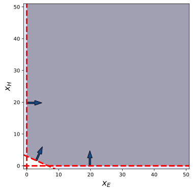
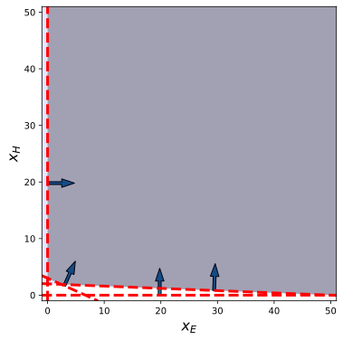
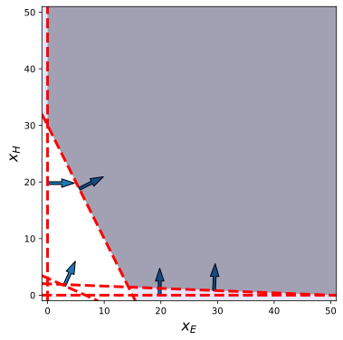
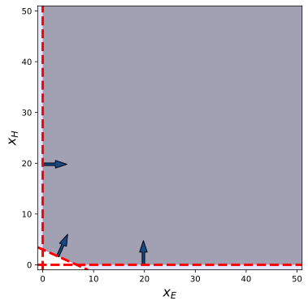
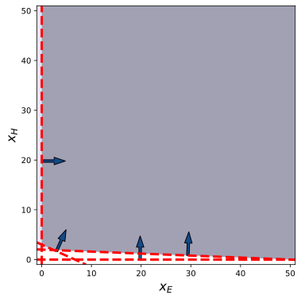
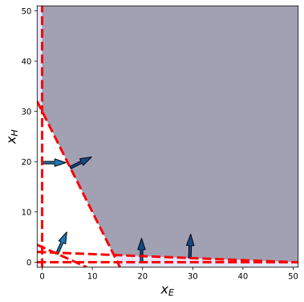

Graphical solution to Linear Programs
- Ian Hawke
- Michael Kenna-Allison
Optimal portfolio problem
Two assets $A, B$, different returns, diversify investments to hedge risk.
\[ \begin{array}{lrlcrlcl} \max & 0.02 & x_A & + & 0.03 & x_B && \\ \text{subject to} & & x_A & + & & x_B & \le & 10 \\ & & x_A & & & & \le & 7 \\ & & & & & x_B & \le & 5 \\ && x_A, &&& x_B & \ge & 0. \end{array} \]Feasible region
Feasible region: set of points $x$ obeying all constraints.
\[ \begin{array}{rcrcl} && \color{blue}{x_B} & \color{blue}{\ge} & \color{blue}{0} \\ x_A &&& \ge & 0 \\ x_A &&& \le & 7 \\ &&x_B & \le & 5 \\ x_A & + & x_B & \le & 10 \end{array} \]Feasible region: set of points $x$ obeying all constraints.
\[ \begin{array}{rcrcl} && x_B & \ge & 0 \\ \color{blue}{x_A} &&& \color{blue}{\ge} & \color{blue}{0} \\ x_A &&& \le & 7 \\ &&x_B & \le & 5 \\ x_A & + & x_B & \le & 10 \end{array} \]Feasible region: set of points $x$ obeying all constraints.
\[ \begin{array}{rcrcl} && x_B & \ge & 0 \\ x_A &&& \ge & 0 \\ \color{blue}{x_A} &&& \color{blue}{\le} & \color{blue}{7} \\ &&x_B & \le & 5 \\ x_A & + & x_B & \le & 10 \end{array} \]Feasible region: set of points $x$ obeying all constraints.
\[ \begin{array}{rcrcl} && x_B & \ge & 0 \\ x_A &&& \ge & 0 \\ x_A &&& \le & 7 \\ && \color{blue}{x_B} & \color{blue}{\le} & \color{blue}{5} \\ x_A & + & x_B & \le & 10 \end{array} \]Feasible region: set of points $x$ obeying all constraints.
\[ \begin{array}{rcrcl} && x_B & \ge & 0 \\ x_A &&& \ge & 0 \\ x_A &&& \le & 7 \\ &&x_B & \le & 5 \\ \color{blue}{x_A} & \color{blue}{+} & \color{blue}{x_B} & \color{blue}{\le} & \color{blue}{10} \end{array} \]Feasible region: set of points $x$ obeying all constraints.
\[ \begin{array}{rcrcl} && x_B & \ge & 0 \\ x_A &&& \ge & 0 \\ x_A &&& \le & 7 \\ &&x_B & \le & 5 \\ x_A & + & x_B & \le & 10 \end{array} \]


Level curves
- Objective: \[ \max z = f(x) = 0.02 x_A + 0.03 x_B; \]
- Draw level curves where $z=\text{constant}$.
- Follow normal to level curves, increasing $z$.
- Last feasible point crossing level curve is optimal.


Diet problem
Sam only eats eggs ($E$) and ham ($H$).
\[ \begin{array}{lrlcrlcl} \min & 1 & x_E & + & 10 & x_H && \\ \text{subject to} & 20 & x_E & + & 10 & x_H & \ge & 300 \\ & 90 & x_E & + & 20 & x_H & \ge & 600 \\ & 0.02 & x_E & + & 0.5 & x_H & \ge & 1 \\ && x_E, &&& x_H & \ge & 0 \end{array} \]Feasible region
Feasible region: set of points $x$ obeying all constraints.
\[ \begin{array}{rcrcl} && \color{blue}{x_H} & \color{blue}{\ge} & \color{blue}{0} \\ x_E &&& \ge & 0 \\ 90 x_E & + & 20 x_H & \ge & 600 \\ 20 x_E & + & 10 x_H & \ge & 300 \\ 0.02 x_E & + & 0.5 x_H & \ge & 1 \end{array} \]Feasible region: set of points $x$ obeying all constraints.
\[ \begin{array}{rcrcl} && x_H & \ge & 0 \\ \color{blue}{x_E} &&& \color{blue}{\ge} & \color{blue}{0} \\ 90 x_E & + & 20 x_H & \ge & 600 \\ 20 x_E & + & 10 x_H & \ge & 300 \\ 0.02 x_E & + & 0.5 x_H & \ge & 1 \end{array} \]Feasible region: set of points $x$ obeying all constraints.
\[ \begin{array}{rcrcl} && x_H & \ge & 0 \\ x_E &&& \ge & 0 \\ \color{blue}{90 x_E} & \color{blue}{+} & \color{blue}{20 x_H} & \color{blue}{\ge} & \color{blue}{600} \\ 20 x_E & + & 10 x_H & \ge & 300 \\ 0.02 x_E & + & 0.5 x_H & \ge & 1 \end{array} \]Feasible region: set of points $x$ obeying all constraints.
\[ \begin{array}{rcrcl} && x_H & \ge & 0 \\ x_E &&& \ge & 0 \\ 90 x_E & + & 20 x_H & \ge & 600 \\ \color{blue}{20 x_E} & \color{blue}{+} & \color{blue}{10 x_H} & \color{blue}{\ge} & \color{blue}{300} \\ 0.02 x_E & + & 0.5 x_H & \ge & 1 \end{array} \]Feasible region: set of points $x$ obeying all constraints.
\[ \begin{array}{rcrcl} && x_H & \ge & 0 \\ x_E &&& \ge & 0 \\ 90 x_E & + & 20 x_H & \ge & 600 \\ 20 x_E & + & 10 x_H & \ge & 300 \\ \color{blue}{0.02 x_E} & \color{blue}{+} & \color{blue}{0.5 x_H} & \color{blue}{\ge} & \color{blue}{1} \end{array} \] 





Level curves
- Objective: \[ \min z = f(x) = x_E + 10 x_H; \]
- Draw level curves where $z=\text{constant}$.
- Follow normal to level curves, increasing $z$.
- Last feasible point crossing level curve is optimal.
Summary
- Mathematical programming formulates and solves decision problems.
- Linear programs are specified by the coefficients of the objective functions and constraints.
- The feasible region is the set of all solutions satisfying the constraints.
-
The graphical solution works with two variables, gives intuition for general case:
- Follow normal to improve objective function.
- Optimal solution at vertex of feasible region.